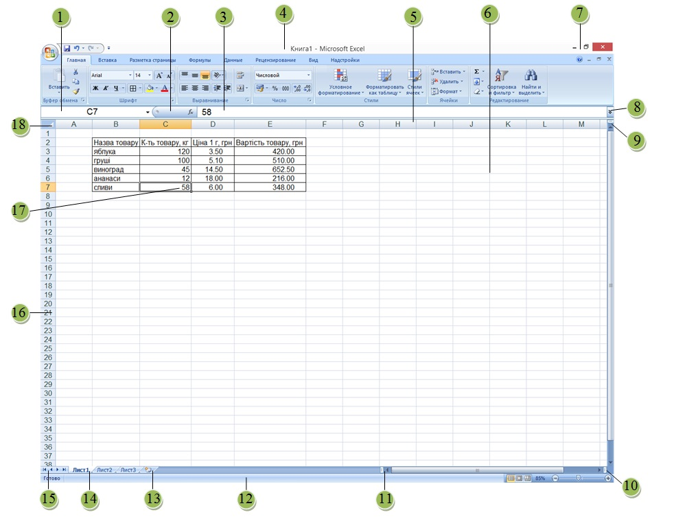

Вікно програми
Після запуску програми Excel 2010 на екрані відкриються два вікна: вікно табличного процесора та підлегле до нього вікно електронної книги.
Вікно Excel – це типове вікно Windows - програми, що містить рядок меню, смуги прокручування, панелі інструментів (рис. 1.1). Так само, як і у вікні текстового редактора Word, у вікні Excel за умовчанням відображаються панелі інструментів Стандартна і Форматування, що дають змогу з документами різні операції (створення, відкривання, зберігання тощо), а також форматувати їх уміст.

Рис. 1.1. Вікно програми
Рис. 1.1. Вікно програми
- Поле Ім’я
- Кнопка Вставлення функції
- Поле Pядка формул
- Рядок заголовка вікна табличного процесора
- Рядок номерів стовпців
- Вікно електронної книги
- Кнопки керування вікном електронної книги
- Кнопки розгортання поля Рядка формул
- Позначка горизонтальної смуги розділення
- Позначка вертикальної смуги розділення
- Позначка зміни розмірів горизонтальної смуги прокручування
- Рядок стану
- Кнопка створення нового аркуша
- Рядок ярличків аркушів
- Кнопки прокручування ярличків аркушів
- Стовпець номерів рядків
- Поточна клітинка з табличним курсором
- Кнопка Виділити все